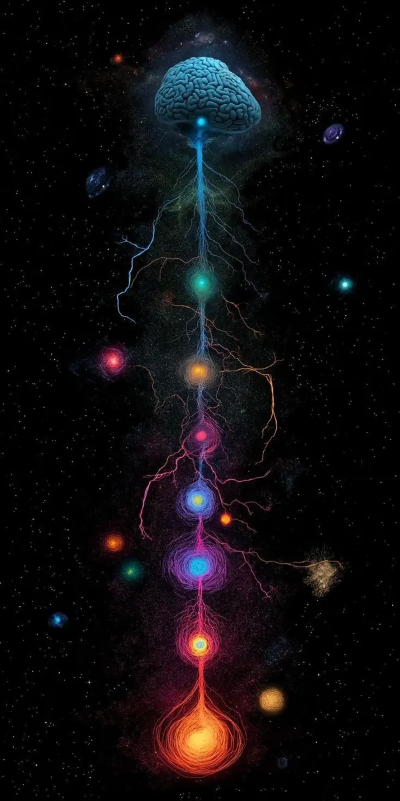
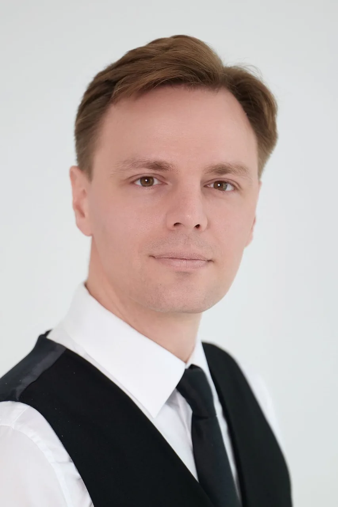
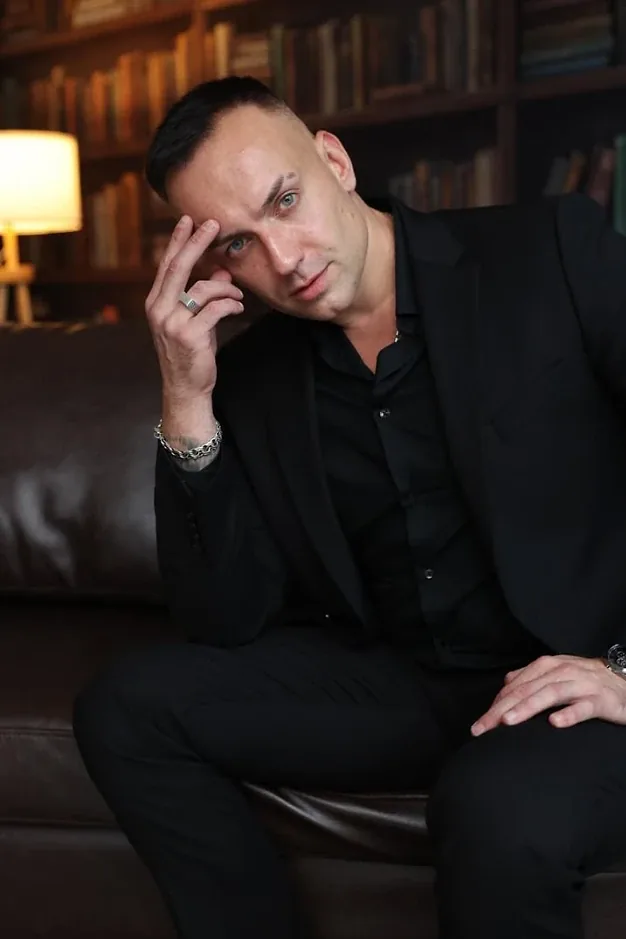
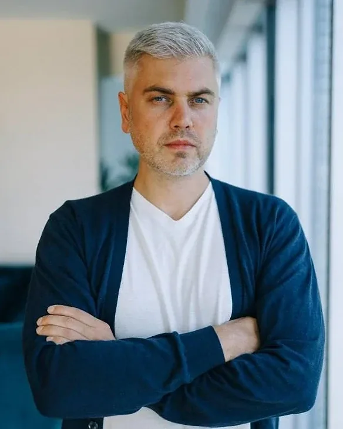

ДипломХит
Психологическое консультирование и психодиагностика
30недель · ≈ 7 мес.
150 000 ₽
Профессиональная переподготовка · 468 часов, из них 300 аудиторных
Профессиональная переподготовка и повышение квалификации психологов. Заочное обучение с очными встречами в Москве и диплом установленного образца.
Идёт набор на поток — от 105 000 ₽ за всю программу


от340часов
объём программы профессиональной переподготовки
5–8месяцев
переподготовка при 10 часах занятий в неделю
24направления
переподготовка, повышение квалификации и курсы
1диплом
установленного образца
Институт психологии АБИТ готовит психологов по двум десяткам направлений — от консультирования и психоанализа до детской, семейной и кризисной психологии. Программы переподготовки — от 340 академических часов: столько нужно, чтобы выйти с реальной квалификацией, а не с набором разрозненных техник.
Обучение заочное: теорию вы изучаете в удобном темпе, а на очных встречах в Москве отрабатываете навыки в парах и тройках и разбираете реальные случаи с преподавателями-практиками.
24
направления обучения
От консультирования и психоанализа до детской, семейной и кризисной психологии
от340
академических часов
Полноценная переподготовка с новой квалификацией, а не интенсив выходного дня
100%
преподаватели-практики
Ведут частную практику и приносят на занятия реальные случаи
1
диплом
Установленного образца — с правом работать по новой профессии


30недель · ≈ 7 мес.
150 000 ₽
Профессиональная переподготовка · 468 часов, из них 300 аудиторных
32недели · ≈ 7,5 мес.
160 000 ₽
Профессиональная переподготовка · 516 часов, из них 314 аудиторных
24недели · ≈ 5,5 мес.
120 000 ₽
Профессиональная переподготовка · 396 часов, из них 240 аудиторных
21неделя · ≈ 5 мес.
105 000 ₽
Профессиональная переподготовка · 340 часов, из них 210 аудиторных

32недели · ≈ 7,5 мес.
160 000 ₽
Профессиональная переподготовка · 516 часов, из них 314 аудиторных
29недель · ≈ 6,5 мес.
145 000 ₽
Профессиональная переподготовка · 480 часов, из них 290 аудиторных

Виталий Сурма
Тренер по публичным выступлениям и деловым коммуникациям
Как стать заметным и узнаваемым экспертом: образ, речь, публичность и продвижение.
Для кого: Психологам, коучам, преподавателям и всем, кому важно уверенно представлять себя и своё дело
Что внутри
Позиционирование
Кто вы как эксперт, для кого работаете и чем отличаетесь от коллег.
Образ и невербальная коммуникация
Язык тела, жесты, голос и первое впечатление — как выглядеть уверенно.
Публичные выступления
Структура выступления, работа со страхом сцены, вебинары, интервью и эфиры.
Контент и соцсети
О чём говорить, чтобы вызывать доверие: рилсы, посты, сторис и экспертные статьи.
Нетворкинг и деловые коммуникации
Самопрезентация за 60 секунд, переговоры, выступления на мероприятиях.
Репутация и рост
Отзывы, коллаборации, медиа и упаковка услуг — путь от первых клиентов к узнаваемости.
Результат: Готовая самопрезентация, план публичности и контент-план на 3 месяца.

Андрей Назаров
Академический директор, коуч, социальный психолог
Базовый курс коучинга: от философии подхода до первой самостоятельной сессии.
Для кого: Психологам, руководителям, HR и всем, кто хочет помогать людям достигать целей
Что внутри
Философия и стандарты коучинга
Чем коучинг отличается от консультирования, наставничества и терапии.
Структура сессии
Модели GROW и OSKAR, контракт, запрос и завершение сессии.
Сильные вопросы
Типы вопросов, активное слушание, обратная связь и работа с паузой.
Цели, ценности, мотивация
SMART-цели, шкалы прогресса, работа с сопротивлением и прокрастинацией.
Инструменты коуча
Колесо баланса, линии времени, шкалирование и визуализация.
Практика и супервизия
Сессии в тройках коуч — клиент — наблюдатель с разбором от автора курса.
Результат: Навык проведения коуч-сессии и сертификат о прохождении курса.

Павел Сафронов
Спикер по нейросетям и автоматизации бизнеса
Нейросети как ассистент: меньше рутины, больше времени на клиентов.
Для кого: Психологам, преподавателям и консультантам — без технической подготовки
Что внутри
Нейросети с нуля
ChatGPT, Claude, GigaChat, YandexGPT: что умеют, чем отличаются, как начать.
Промпты, которые работают
Как ставить задачи нейросети, чтобы получать точный и полезный результат.
ИИ в практике специалиста
Подготовка к сессиям, методические материалы, конспекты, упражнения и тесты.
Контент с ИИ
Тексты, изображения и видео для соцсетей и сайта — быстро и в своём стиле.
Автоматизация записи
Чат-боты, CRM, напоминания клиентам и шаблоны ответов.
Безопасность и этика
Конфиденциальность данных клиентов, ограничения ИИ и границы его применения.
Результат: Набор личных ИИ-инструментов и библиотека промптов под вашу практику.
Хотите войти в психологию с нуля и получить диплом, дающий право работать по новой профессии.
Нужна новая специализация: детская, семейная, кризисная психология, психосоматика или психоанализ.
Педагог, врач, HR, социальный работник, коуч — хотите добавить психологические компетенции к своей работе.
Нужно понимать людей: мотивацию, конфликты, выгорание, поведение команды и партнёров.
Хотите разбираться в возрастных кризисах, эмоциях ребёнка и выстраивать отношения без давления.
Разобраться в собственных сценариях, границах и отношениях — с опорой на профессиональную теорию.
Между мыслью и чувством, человеком и его окружением, прошлым опытом и решением, которое он принимает сегодня. Мы учим видеть эти связи — и собирать целую картину из разрозненных деталей.


Подбирать методики под запрос, корректно проводить обследование и интерпретировать результаты.
Выстраивать контакт, формулировать запрос, держать структуру сессии и доводить клиента до результата.
Оформлять психологическое заключение и рекомендации на профессиональном языке.
Понимать специфику работы с детьми, подростками, взрослыми и семьёй.
МАК, арт-терапия, телесно-ориентированные техники, коучинговые инструменты — в связке с классическим подходом.
Соблюдать этику, распознавать пределы компетенции и вовремя направлять клиента к смежным специалистам.
Острый стресс, кризис, утрата, травма — понимать алгоритм действий и не выгорать самому.
Понимать, как устроены контракт с клиентом, стоимость услуг, продвижение и супервизия.
Итоговая аттестация — экзамен (8 ч). После неё выдаётся диплом о профессиональной переподготовке с квалификацией «Психолог-консультант».

Теорию изучаете дистанционно: лекции, материалы и задания доступны в любое время, учёбу легко совмещать с работой.
Регулярные встречи в аудитории — живая практика, отработка техник и общение с преподавателями и группой.
Консультант — клиент — наблюдатель: вы по очереди пробуете каждую роль и получаете обратную связь.
Преподаватели приносят кейсы из собственной практики — вы видите, как принимаются решения.
Защита итоговой работы — и диплом о профессиональной переподготовке с квалификацией по выбранному направлению.

Академический директор Института психологии АБИТ
Коуч, социальный психолог, методолог
Отвечает за содержание и качество всех программ института. Автор обучающих программ по личностному росту, построению отношений и развитию. Ведёт блоги о психологии с многомиллионной аудиторией.
278 тыс.+
подписчиков в Instagram
2,5 млн
подписчиков в TikTok
267 тыс.+
подписчиков на YouTube

Бизнес-психология, эксперт-практик
Специалист в области маркетинга, рекламы и автоматизации бизнеса. Руководитель бизнес-скилл MBA «Инновационная стратегия маркетинга в управленческой цифровой экономике».

Психолог-практик, магистр психологии, бизнес-коуч
Эксперт-практик в области социальной психологии, психологического консультирования и диагностики. Ведущий специалист по экстремальной психологии.

Эксперт в области ораторского мастерства и риторики
Тренер по публичным выступлениям и деловым коммуникациям. Эксперт по невербальной коммуникации и языку тела.

Психолог-практик
Валяева Людмила Викторовна — практикующий психолог. Ведёт индивидуальное консультирование и разбирает на занятиях случаи из собственной практики.

Вручение дипломов выпускникам АНО ДПО «АБИТ»
По итогам обучения вы получаете диплом о профессиональной переподготовке с присвоением квалификации по выбранному направлению.
Небольшие группы, живое обсуждение и преподаватели, к которым можно подойти с вопросом в перерыве.


Психолог помогает лучше понять себя, справиться с трудностями и улучшить качество жизни. Выберите, что ближе вам, — тема подставится в заявку.
Важно помнить: не обязательно ждать, пока станет совсем плохо. Психолог — это про заботу о себе и своём благополучии.
Ваш запрос может быть любым
Индивидуальная консультация
Андрей Назаров · онлайн
Стоимость и время — по договорённости, куратор подберёт удобный слот.
за всю программу
Условия оплаты обсуждаются индивидуально — +7 495 981-56-01
Не уверены, что программа вам подходит? Это нормально. Запишитесь на бесплатную консультацию — куратор разберёт вашу ситуацию и честно скажет, если программа не решит вашу задачу.
Заполняете форму на сайте — на это уходит меньше минуты.
Перезваниваем в течение рабочего дня, отвечаем на вопросы и помогаем понять, подходит ли вам программа.
Паспорт и диплом о высшем или среднем профессиональном образовании (либо справка, если вы ещё учитесь).
Заключаем договор об обучении и обсуждаем условия и график оплаты.
Приходите на первое занятие потока и начинаете учиться.
Нет. Программы профессиональной переподготовки рассчитаны в том числе на тех, кто приходит из другой профессии. Достаточно диплома о высшем или среднем профессиональном образовании — по любому направлению. Если вы ещё студент, подойдёт справка из вуза или колледжа.
По программам переподготовки — диплом о профессиональной переподготовке установленного образца с квалификацией по выбранному направлению. По программам повышения квалификации — удостоверение.
Теорию вы изучаете дистанционно, в удобное время: лекции, материалы и задания доступны онлайн. Дополнительно проходят очные встречи в Москве — для практики, отработки техник и общения с преподавателями. Учёбу легко совмещать с работой.
В Москве, в Зеленограде: Савелкинский проезд, д. 4, бизнес-центр «Зеленоград», 3 этаж. Расписание встреч куратор сообщает при поступлении.
Стоимость зависит от направления и объёма часов — программы переподготовки начинаются от 105 000 ₽ за весь курс. Без скрытых доплат за модули, материалы или аттестацию: цена фиксируется в договоре. Условия оплаты обсуждаются индивидуально.
Запишитесь на бесплатную консультацию — куратор расспросит о вашем опыте и целях и подскажет, какая программа подойдёт: от психологического консультирования до детской, семейной или кризисной психологии.
Да. Программы дают квалификацию и практические инструменты. В рамках обучения разбираем контракт с клиентом, этику, границы компетенции и профессиональное развитие через супервизию.
Практикующие специалисты: психологи-консультанты, коучи, эксперты по бизнес-психологии и деловым коммуникациям. Содержание программ курирует академический директор института Андрей Назаров.
Оставьте контакты — куратор расспросит о вашем опыте и целях и поможет выбрать направление. Ни к чему не обязывает.
Перезвоним в течение рабочего дня
Куратор ответит на вопросы и поможет понять, ваша ли это программа.
Никаких навязчивых продаж
Если увидим, что программа не решит вашу задачу, — скажем об этом прямо.
Место в потоке бронируется заявкой
Стоимость — от 105 000 ₽ за всю программу, она фиксируется в договоре.
Предпочитаете позвонить?
+7 495 981-56-01Институт психологии АБИТ
От 340 часов · заочно + очные встречи в Москве
Институт психологии АБИТ — подразделение АНО ДПО «Академия бизнеса и инновационных технологий», которое готовит психологов по программам дополнительного профессионального образования. Здесь можно получить новую профессию с нуля или повысить квалификацию, если вы уже работаете с людьми.
Профессиональная переподготовка длится от 5 до 8 месяцев и заканчивается дипломом установленного образца с новой квалификацией: психолог-консультант, детский, семейный или кризисный психолог, нейропсихолог, педагог-психолог, специалист по АВА-терапии и другие. Повышение квалификации занимает от 5 до 10 недель и завершается удостоверением. Для поступления не нужно психологическое образование — достаточно диплома о высшем или среднем профессиональном образовании по любому направлению.
Обучение проходит заочно с очными встречами в Москве: теорию слушатели изучают онлайн в удобное время, а практику отрабатывают на занятиях в Зеленограде, в БЦ «Зеленоград» на Савелкинском проезде, 4. Учёбу легко совмещать с работой. У каждого слушателя есть личный кабинет с уроками, тестами, практическими заданиями и связью с куратором.
Встречи, разбор кейсов, мастер-классы, нетворкинг и выезды. Очные встречи — в Зеленограде, минимум 2–3 раза в месяц.
Оставьте контакты — перезвоним и расскажем, как вступить.
Адрес
Москва, Зеленоград, Савелкинский проезд, д. 4, БЦ «Зеленоград», 3 этаж
Бизнес-центр «Зеленоград», 3 этаж
Telegram
@abitpsy